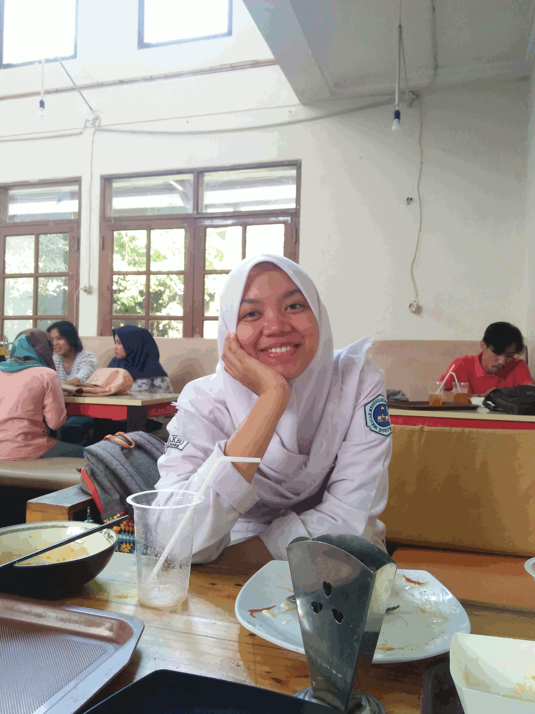

Friendship is born at that moment when one person says to another, 'What! You too? I thought I was the only one.
Hai! Aku Tara, panjangnya sih Talitha Adristi Rasendriya, tapi ya biasa dipanggil itu atau ngga Taya, Tayo, dan yang sejenis. Hehe. Lahir di Jakarta, tanggal 19 Juni 17 tahun silam. Jangan lupa ya! Siapin mentahan aja, soalnya ga nerima barang:) Besar sedikit di tempat kelahiran terus hijrah deh ke Depok^^, ada yang sedaerah? Sampe umur 15 tahun (lagi bosen-bosennya tuh tinggal disana) akhirnya memutuskan untuk merantau ke Bogor and here I am now! Hihi.
Soal hobi, nomor 1 (yang juga untuk memenuhi kebutuhan manusia pada umumnya, sih) aku suka banget BANGET kulineran! Apalagi bareng temen, keluarga, pacar, atau ngga keluarga pacar. Hehe.
Dan kalo lagi makan tuh enaknya sih fokus aja sama makanannya, tapi kadang-kadang suka sambil nonton (tv, youtube, atau adik kecil di meja sana yang lucu banget!), main hp, sambil ngobrol (kalo ada temen ya, sendirian mah jangan dong), atau sambil BACA BUKU!
Udah deh segitu aja ceritanya, nanti kalo ketemu kita ngobrol lagi ya^^. Bye! Oh btw ya, besok ada UTS praktik mikrobiologi nih! Mau belajar bareng ga?
| Gram (Preston-Morrel) | Campuran 24 jam | Kristal Violet dan Safranin | Masing-masing 30s | Ethanol absolut/Aseton-alkohol |
| BTA/BTTA (Ziehl-Neelsen) | Campuran 24 jam | Karbol Fuchsin dan Metilena Biru | 5-7' dan 2' | Asam-alkohol |
| Spora (Schaeffer-Fulton) | Berspora 48 jam | Malasit Hijau 5% dan Safranin 0,5% | 3-5' dan 2' | - |
| Kapsul (Anthony) | Berkapsul 48 jam | Kristal Violet 1% | 1' | Larutan Terusi 20% |